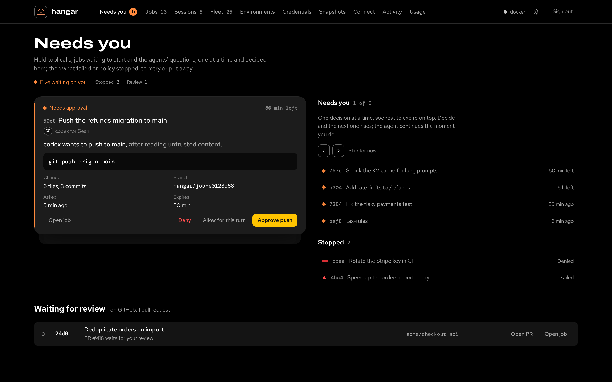
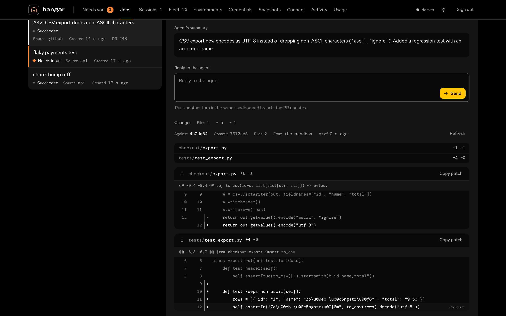
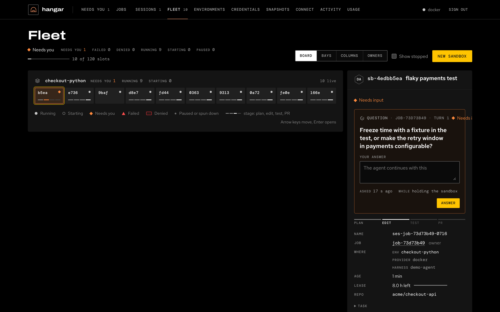
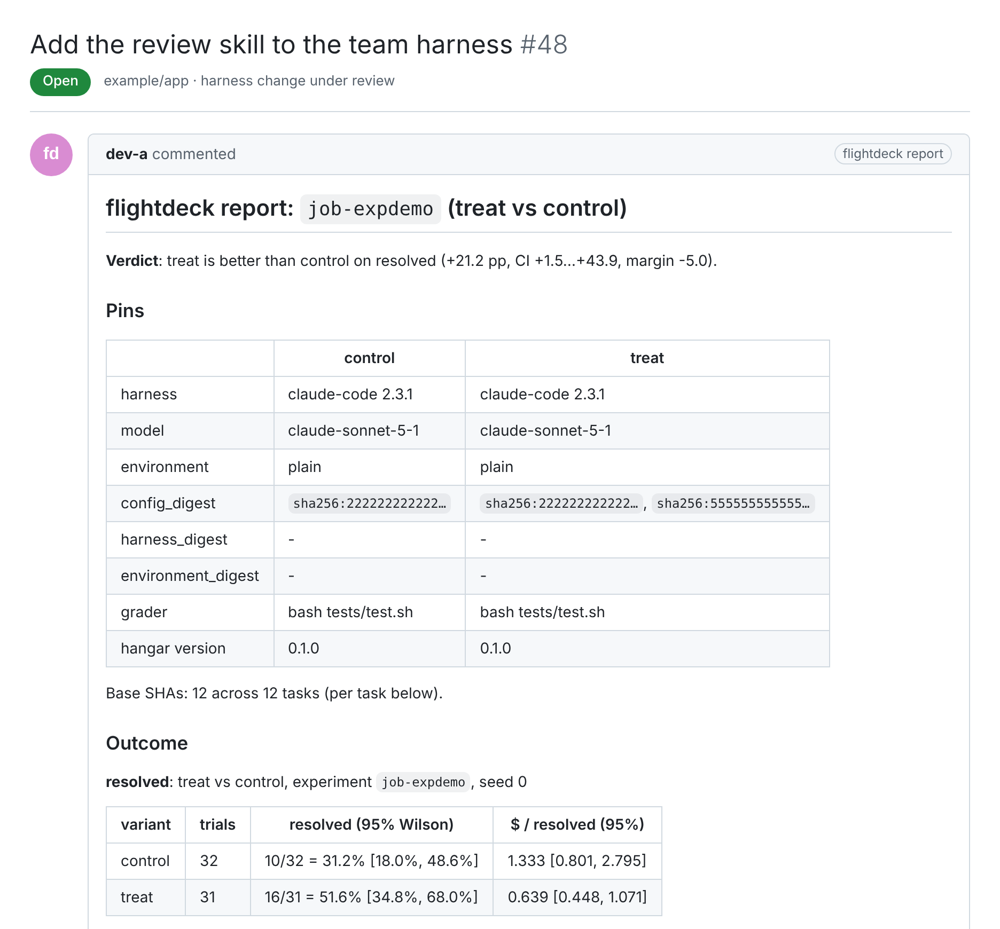
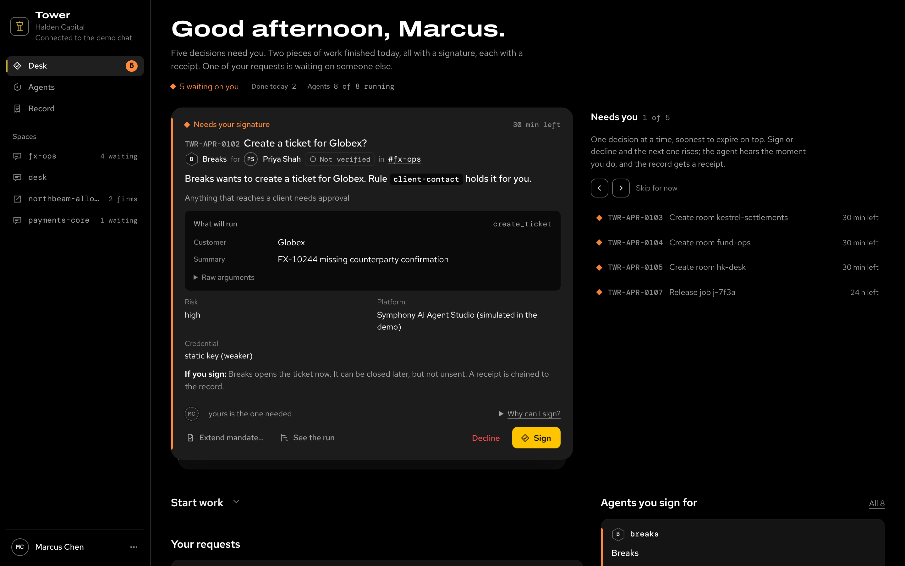
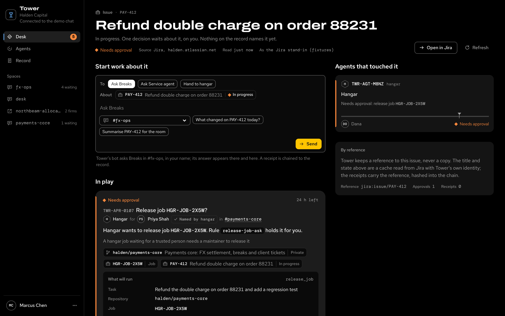
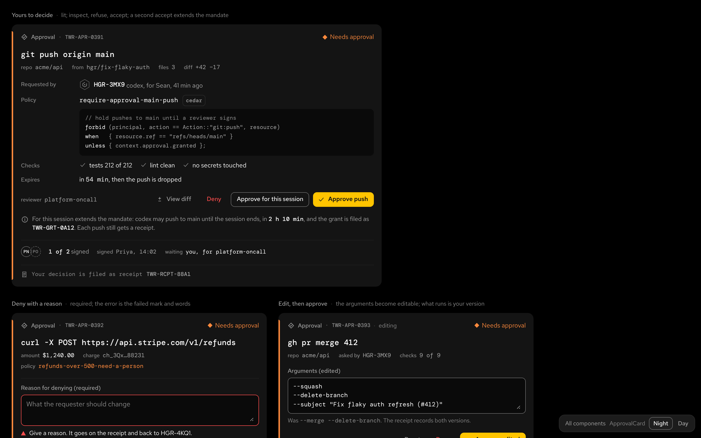

Agent factory
Hand work to cloud coding agents and keep every change reviewable. Five tools and a team harness repo, for a team of six running about sixty agent sessions.
Sixty agents at once breaks the way a team works
Six engineers, about ten streams each. Nobody can watch them all.
Every change still needs a human. Reviewers become the bottleneck.
A new skill or prompt is judged by impressions, not paired runs.
Ticket text and web pages can steer an agent toward a push.
Four planes, one loop, one gate
A Jira ticket to a merged PR
Ten agents. One needs you.
Needs you is the console's first tab: held tool calls and agents' questions to decide here, then what failed and what waits for a review on GitHub. Everything running stays grey.
- A question is answered in place; the agent continues with the answer.
- A deny needs a reason. It goes on the receipt and back to the agent.
- The clear state is the hero: Nothing is waiting on you.

Review the change, reply to the agent
A job's detail carries the agent's summary, a composer and the change as a greyscale diff. A comment on a line rides with your next message; the PR updates on the agent's next turn.
- +5 −1 across 2 files, against the base commit, from the sandbox.
- Copy the patch, or open the agent's terminal and work beside it.
- Only a failing test lights a hunk; additions and deletions stay grey.

The whole fleet on one board
Board, Bays, Columns and Owners are four views of the same sandboxes and one selection. 10 of 120 slots in use; the one tile that needs a person is the only color on the page.
- Arrow keys move across the board; Enter opens the detail beside it.
- Each tile shows its stage: plan, edit, test, PR.
- Allow or deny a held step, or answer a question, without leaving the Fleet.

Change the harness on evidence, not impressions
The verdict lands on the harness PR
flightdeck posts one comment on the pull request that changes the harness, and updates it in place: the verdict, the pins of both variants and the outcome with its interval.
- treat is better than control on resolved: +21.2 pp, CI +1.5 to +43.9.
- Paired by task; cancelled, drifted and infrastructure failures are excluded and listed.
- The approver is never the author.

Risky actions fail closed and leave a receipt
Reading a web page, a remote MCP server or a ticket marks the run.
Sandboxes can't push. hangar delivers one commit through its gateway.
Release, landing, egress and secrets go to Tower: allow, deny or wait.
The requester never approves their own risky work. Every decision is signed.
The Desk: what needs you, what finished, who you sign for
Tower's home for a person. Start work from the composer, hand a task to hangar or ask an agent in its room, decide the cards that need your signature, and see the day's receipts.
- 5 waiting on you · done today 2 · agents 8 of 8 running.
- Each card says what will run, why it asked and what signing does.
- Every decision files a receipt, chained into the record.

Business objects by reference
A Jira issue, a pull request, a hangar job: each is a chip, and each chip opens a page with what touched it, what is in play and a composer to start work about it.
- Tower keeps a reference, never a copy; the title and state are read from the source.
- The receipt carries the reference, hashed into the chain.
- Ask Breaks in #fx-ops, in your name; the answer comes back here.

One design system, every screen
Airframe theme-v6 adds the parts a person needs to work with an agent: approval card, question, composer, diff, avatars, object chips, page header, empty state, toast, dialog and drawer. Every screen in this deck is built from it.
- Tokens and af- classes only; a test in each repo fails on a color literal.
- Night and Day, forced colors and reduced motion, in one stylesheet.
- 33 components in the gallery; the tool repos vendor a tagged release.

Running and measured today, governed next
Safe to run
- Sandboxes, jobs and sessions on GKE
- Intake posture, taint gates, sealed graders
- Manifests and traces with harness digests
- flightdeck data plane and statistics
Measure everything
- Harness lock: freeze, check, thaw
- Run outbox and nightly compactor
- Reports, behavior specs, pinned trials
- Slack inbox, Tower's decision API
Governed and decided
- Tower decisions in shadow, then enforce
- One real flightdeck decision
- Team harness, frozen from a good run
- Outbox and compactor on in the cluster